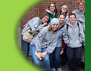

|
|
 | ||||||||

|
Events
Upcoming Events
May 12, 2015 - Bike Night at The People's Pint The 9th Annual Bike Night will take place from 4 - 10PM. 10% of all sales will be donated to DIAL/SELF. A 50/50 raffle will also be held to benefit the agency. RSVP on FaceBook here. Recent Events March 29, 2015 - 14th Annual Badminton Bash at NMH
76 players bashed the birdie in two tournaments at DIAL/SELF's major annual fundraising event. First place trophies were presented to P, B & Drew from NMH in the Early Birdie tournament and to Vicious and Delicious from Northfield in the Sunday Brunch tournament. Second place trophies were awarded to The Riders of Rohan from Greenfield in the morning competition and the Blue Blazing Birdies from Northfield in the afternoon. A huge thank you to all the players, their families and friends who supported them with pledges, our community sponsors and to the businesses who donated prizes for the coffee can raffle.
February 28, 2015 - Trivia Night Thank you to the trivia buffs who attended our inaugural Trivia Competition at the Greenfield Moose Club and raised $869 for the agency. December 10, 2014 - Valley Gives Day Thank you to the community members who supported the agency with their online donations. November 27, 2014 -2nd Annual Sachem Scamper Thank you to the 33 runners who braved the snow-covered ground on Thanksgiving morning to raise $745 for DIAL/SELF.
November 22, 2014 - 6th Annual Powder Puff Football Game The sixth Annual Powder Puff football game between Pioneer Valley Regional School and the Franklin County Technical School was held on Saturday, November 22nd, at 11 AM at Pioneer. Monetary donations of $844 and boxes of food benefited DIAL/SELF Youth and Community Services. November 20, 2014 -Awards Gala The first DIAL/SELF Awards Gala was a big hit. Thank you to all you who celebrated the achievements of staff, volunteers, clients and community members. Pictures and video of the event will be posted soon.
September 19, 2014 . There was a small event to launch the new Rite Aid KidCents program from 9:30 – 10:30 on September 19th at the Rite Aid store at 107 Main Street in Greenfield. A $10,000 check was presented to DIAL/SELF Youth & Community Services as the first local charity to take part in the KidCents program. The KidsCents Program allows participants to round up the pennies on their in store purchases to be donated to charity. For every $500 raised in this way, Rite Aid will match it with another $500.
September 4, 2014 -Thanks for cheering us on as we marched in the Franklin County Fair parade. August 9, 2014 - Bridge of Flowers 10K Race and Steve Lewis Subaru Charity 3K Run & Walk
June 2, 2014 - Trivia Night at the Rendezvous Thanks to all who came out to have fun and raise money. In the end, DIAL/SELF board member Benjamin Miner's team won by one point over board member Starr Pinkos' team.
-------------------------------------- Every county should be offering the kind of programs, to teens (11-21) that DIAL/SELF offers: Affordable housing for teens in need and emergency housing for teens in distress - many, many on-going education and mentoring programs that teach teens 'How to live and work on your own' skills - counseling - support - with many individual sites throughout Franklin County, I recently took the DIAL/SELF "virtual tour" with Phil and David and I was amazed to learn that: There is only one DIAL/SELF and that it is unique to Franklin County. We are all so lucky to have DIAL/SELF programs for "teens in need" in Greenfield"
|
|
||||||||||||||
|
|